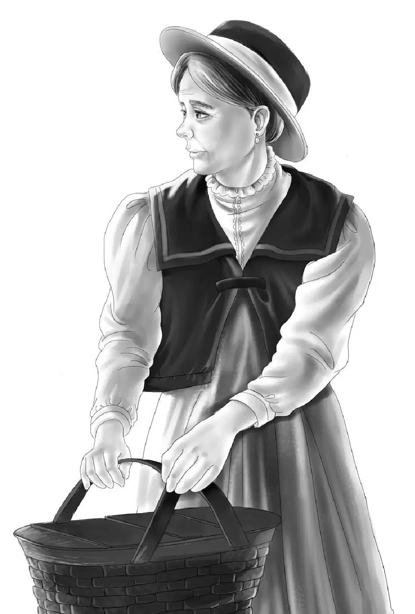
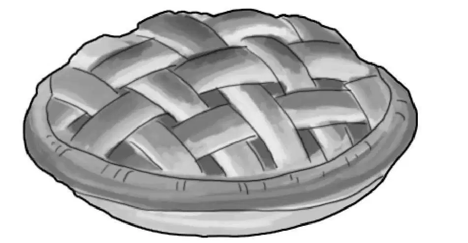
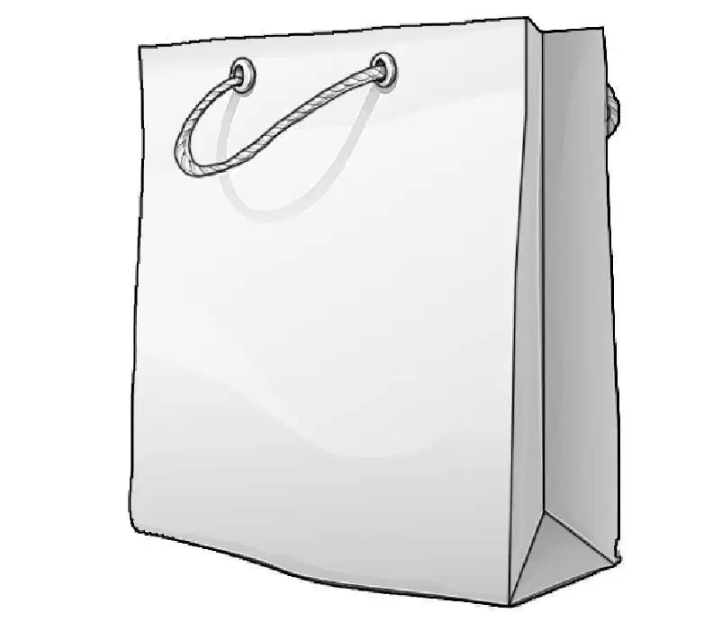
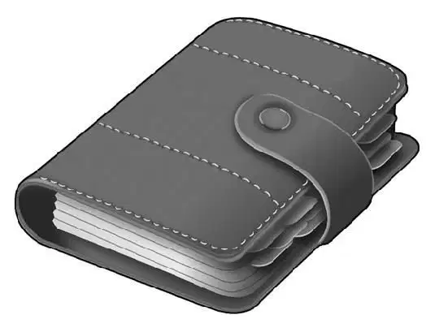
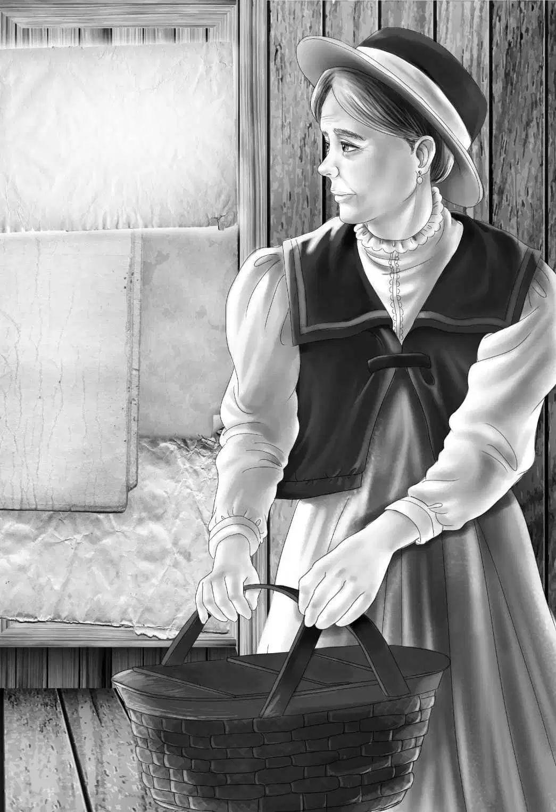

An Old Secret

马克斯叔叔看到弟弟一家和班尼过来玩，高兴极了。
“你们看，我已经动手砌了一个大窗户，”马克斯叔叔指向餐厅前面的那堵墙，“这儿看起来明亮多了。”
“马克斯，孩子们有个问题想问你。”海夫人说。
“希望我能答上来。”他回应道。
塞米讲述了报纸上关于威廉·卡韦、卡韦夫人和约翰逊的报道。还没等他说完，马克斯叔叔就开始不住地点头。
“没错，”他说，“海之屋是我们的父亲从约翰逊·卡韦手里买下来的，我记得房子里里外外被彻底打扫了一遍，因为之前有很多孩子住过嘛！约翰，你还记得吗？哦，你肯定忘记了，你当时还很小，肯定没注意到。”
“我想是的。”海先生承认道。
“后来发生了一件事儿，咱家来了位客人……”马克斯叔叔说，“哦，我有点记不清了，要知道当时我年龄也不大。”
“噢，使劲儿想想吧，”班尼说道，“客人是男的还是女的？”
“是个男的，”马克斯叔叔说，“一名年轻男子，他来看望我们的爸爸，我记得他说话的方式很搞笑，总把‘而是’说成‘如此这般’。”
“听起来像是英国那边的说法。”海夫人说。
“唔，”马克斯叔叔接着说，“我父亲和这个年轻男子上楼去察看了所有的房间，他们好像在找什么东西，我不知道找的是啥，但确定他们一无所获，因为那个男人离开时表情很失落。”
“他们去三楼了吗？”班尼问道。
“去了，我记得还跟在他们后面爬楼梯呢。”
小杰突然灵光一现，说道：“我能猜出那个客人是谁——他一定是威廉·卡韦。长大成人后的他，很可能想找到那间记忆中的小屋子。”
班尼说道：“嗯，或许你说得没错。我敢肯定他从没忘记过那个大木马。”
塞米接着说：“只是他压根没想到以前住过的房间被封死了，门还用墙纸给糊了起来。他一定以为玩具和摇摆木马都被丢掉了，或者被人拿走了。”
“那么，所有线索都能对上啦，这谜团可真是环环相扣！”马克斯叔叔说，“很有可能卡韦的奶奶把房间给封上了，却自始至终都没告诉过他。”
“好啦，现在说说你的餐厅吧。”约翰·海换了个话题。
马克斯摇了摇头。
“我还没想好名字呢。”
塞米已经等不及了。
“我已经想出了一个很棒的名字——摇摆木马！”
马克斯叔叔噗地笑出声来：“塞米，这个名儿真不错，你是怎么想到它的？”
“哈，还记得威廉的摇摆木马吗？我们可以把它搬过来，放在店门前，然后把其他旧玩具摆在房周围的架子上，供小孩们参观。”
海夫人说道：“我觉得，每个人都会喜欢这些玩具的，它们既古老又有趣。”
“还要在外面挂个招牌！”马克斯叔叔兴奋地叫道，“我要亲自动手，做个和老摇摆木马一模一样的招牌，赶明儿我得先去看看木马是什么样儿。”
“好得很，我知道你擅长画画。”他的弟弟说，“明天过来和我们一起共进晚餐吧，顺便可以去看看那些玩具。”
马克斯叔叔向塞米眨了眨眼。
“我想在树屋里吃。”马克斯叔叔说。
“那就在后院里举行露天晚餐好啦！”海先生说道。

“我还要邀请奥登家的孩子。”小杰说道。
“那一共就有10个人啦。”塞米接了一句。
“我会准备两个苹果馅饼带过去。”马克斯叔叔说。
“天哪，太好了！”班尼说道，“你做的苹果馅饼是我吃过的最好吃的——除了那次杰西用玻璃瓶代替擀面杖做的馅饼外。”
第二天傍晚，当奥登家的孩子来到海家后院的时候，不由得又惊又喜，海先生居然把烤炉都搬了出来。
“爸爸，我以前可不知道你会做饭！”小杰大吃一惊。
“偶尔做个汉堡还是可以的。”爸爸回应道。
几分钟后，马克斯叔叔也来到了后院，他带来两个苹果馅饼和一个用牛皮纸包裹的袋子。亨利和杰西接过了馅饼，不过牛皮纸袋子还是在马克斯叔叔手里。他和大家一一打了声招呼后，便抬起头看了看树屋，又绕着大树转了转。

“小家伙们，这真是间漂亮的树屋，”他说，“比我们当年做的还要好。那个圆窗在哪儿？”
“站在树下可看不到，”小杰说，“爬到树上以后，我们再指给你看，反正待会儿大家会一起在树上吃晚餐的。”
说完，两个男孩就爬上了绳梯，马克斯叔叔也跟着爬了上去。亨利还专门为树洞做了一个木头盖。小杰打开盖子，取出望远镜，拿给马克斯叔叔。
“看，”小杰说，“看屋顶下面，圆窗就在那儿。”
“是啊，”马克斯叔叔说道，“真的在那儿！”
晚餐已经准备好了，塞米和小杰放下篮子，杰西把盛有汉堡和腌菜的盘子放进去，还有孩子们的牛奶和马克斯叔叔的咖啡，接着是馅饼和奶酪。
吃罢晚饭，到了马克斯叔叔参观阁楼的时间。小杰、塞米与他一同动身前往，却被跟上来的奥登先生吓了一大跳。“我也想去看看呢！”爷爷说。
男孩们指给马克斯叔叔看墙纸、圆窗和所有的玩具，还带他参观了摇摆木马。
马克斯叔叔从口袋中掏出卷尺，测量了一下木马和底座，并仔细观察了它们的颜色。随后，他拿出随身携带的素描本，把木马画了下来。
“画得真好，”奥登先生说道，“做出来的话，会是一个非常精美的标志。我很想为新餐厅的开张出点力，这样好了，你只管放心大胆地去买做标志所需的材料，把账单汇给我就行。”
这次马克斯叔叔同意了，因为他深知，奥登先生的确对餐厅抱着浓厚的兴趣。
大家再次回到院子里，客人们都打算告辞离开了，马克斯叔叔说道：“这几天，我一直在琢磨那间密室的秘密，本以为毫无头绪的，谁知道并不是如此。”
说完，他拿起手里的袋子，扯下牛皮纸，掏出一本皮革封面的书，只见封面上印着几个烫金大字：
家族日志
大家满心期待地等着马克斯叔叔继续往下说。
“当初，我们从这里搬走时，”他讲述道，“都是各自把书打包好，装进箱子，之后我就再没碰过它们。直到再次翻看箱子时，才发现这本书和我的其他书混在一起，而我从没见过它，我想一定是有人放错了。”
说完，马克斯叔叔轻轻翻开书，只见它的一半已经密密麻麻写满了字，准确来说，它更像一本日记，还是标注了日期的日记。

“说实话，”马克斯叔叔说道，“我曾打算，把有字的纸撕下来，剩下的空白页用来素描。好在没这么做，而是原原本本地保留了下来。这不是我爸爸的书，肯定是以前的房主留下来，并和我们的书混在了一起。”
塞米再也等不下去了。
“这说明了什么？”他迫不及待地问道。
马克斯叔叔说：“我知道你肯定会这么问。我曾经翻看了一下，想来这本子应该是威廉的奶奶卡韦夫人的，她记载了来访的客人，订购的家具物品，还有自家花园里种的蔬菜。”
孩子们还是搞不明白，这些和谜团到底有什么关联，但他们仍在洗耳恭听。
“看这里，”马克斯叔叔说道，“这一页记载了1910年4月5日发生的事，卡韦夫人买了5卷墙纸，‘买给小威的房间用’——上面是这么写的。”
杰西说道：“那些小鼓和玩具花纹的墙纸，是用来装饰壁橱和威廉房间的！看来她已经在为威廉的到来做准备了。”
马克斯叔叔翻了一页。
“这上面写着：7月10日是小威的生日，为孩子们订10人份的蛋糕。”
“这就对了！”塞米高兴地说，“我们在图书馆的旧报纸上看到了关于派对的事，这也是麦格雷戈太太所记得的。”

“现在呢——”马克斯叔叔说道，“看看你们能不能自己读出最后一页。”
时间是1910年8月15日，笔迹已经十分模糊了，最后还是杰西费力地辨认了出来，她读道：“房子要租给约翰逊一家，一想到不认识的孩子玩小威的玩具我就受不了。收拾行李离开前，我用墙纸糊上了壁橱。希望明年还会回来。”
接下来，大家都沉默不语，片刻后，还是班尼率先打破了沉默：“这完全符合我们的猜测：卡韦夫人自己封了那间屋子。”
“她没告诉其他人的原因是，她以为自己还会回来。”亨利说道，“但正如我们所知，她再也没有回来过。”
“所以摇摆木马就一直被隐藏起来了！”小杰说，“真高兴我们找到了它。”
马克斯叔叔回应道：“我也很高兴，现在摇摆木马马上要有新家了，孩子们都会看到它——希望如此。”